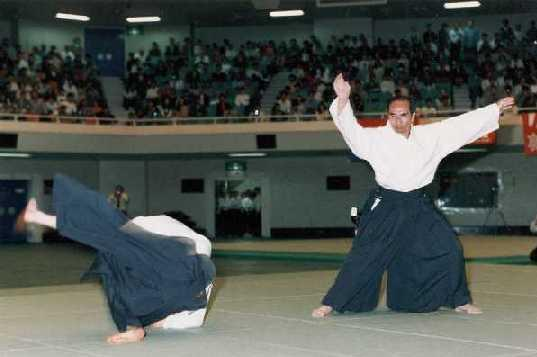
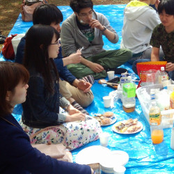
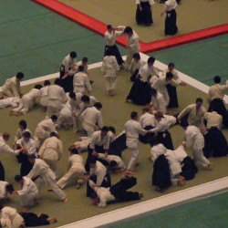
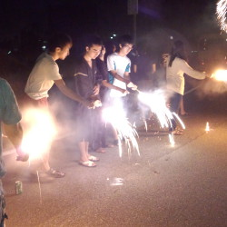
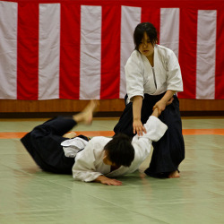
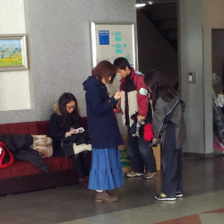
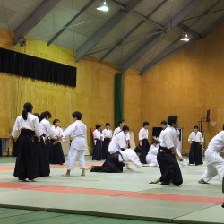

日本伝統の多くの武術の修練を行い、その奥義を究めた植芝盛平先生（1883～1969）がさらに精神的な修行を行って創始した現代武道が合気道です。 合気とは「心の和」「気の感応」などを表す言葉であり、合気道は長い歴史を有する東洋哲学とその実践行法を背景とした「動く瞑想法」「動く禅」であるとも言われています。 合気道は、一般のスポーツとは異なり、いたずらに相手と力で争い敵を破ろうとするものではありません。 入身と転換の体さばきから生まれる技は相手の暴力を制するもので、相手の生命を殺傷しようとするものではありません。 合気道の目的は相手と相和して切磋琢磨を図り、心身の練成を図る事にあります。
合気道が「和」の武道であると言われる所以もここにあります。
合気道は競技としての試合は行いません。
合気道は互いの習熟度に合わせて技を繰り返し、反復しながら稽古する事によって、自然の理法にかなった無理の無い動作が自然に出来る様にする事を特徴としています。 このような絶対的なものを得るためには、相手と対立して勝敗などの相対的なものを意識することがないように稽古を行う必要があります。 このような稽古法は日本人が古くから最も重要視してきた日本の伝統的稽古法であり、心身鍛錬法として最も理想的なものとも言えると思われます。
現在、老若男女を問わず合気道の愛好者が増えています。 これは合気道の動きが合理的で無駄がないために特別に筋力を必要とするもので無く、誰でも稽古が出来るということを裏付けています。 稽古を通じて養われる機敏性は、日常生活においても自然と活かされ、てきぱきとした動作になりますし、合気道の稽古の過程で得られる自信安と定した精神は日常生活にも反映されていきます。

東京大学合気道気錬会は東京大学所属の非インカレサークルです。
週三回約二時間の稽古を毎週行っています。 参加は自由で、自分のスケジュールに合わせた稽古が可能です。 第一体育館一階柔道場とコミュニケーションプラザ三階で豊富に稽古時間を確保しており、関連する外部道場での稽古も可能なため、各自の満足のいくだけ合気道の稽古に励むことが出来ます。
また、上下関係も厳しくないため、アットホームな雰囲気で稽古に励むことが出来ます。
合気道開祖植芝盛平先生の直門、合気道九段であり本部道場師範の多田宏先生を師範とし1992年に設立されました。 現在は当会の初代主将を雑賀師範としてお呼びし、土曜稽古や合宿中にご指導いただいております。 平日の稽古は有段者である指導学年（３年生）の先輩方が工夫して行ってくださるので、稽古を積めば誰でも着実に上達します。
気錬会は東京大学の合気道団体では唯一財団法人「合気会」に所属しています。 この法人には世界の合気道人口の９割、日本の合気道人口の８割が所属しており、文科省の公認団体でもあります。 道場により気風は異なりますが、大学を卒業してからも各地の道場で稽古を続けることができます。 気錬会では二年の夏に初段を取得することを目標に稽古しております。これは国際資格でもあり国外の合気会系道場でも利用できます。
一年を通じて様々なイベントがあります。





